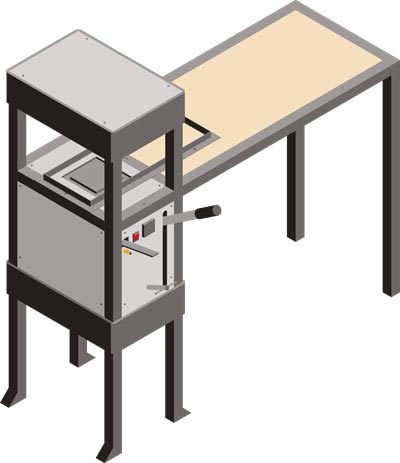

Beyond Plastic
ビヨンド・プラスティック
プラスチックに代わる生分解性プラスチックの研究
リサイクル・プラスチックから製品を作ることはとてもクールですが、長期的にはプラスチックと決別する必要があります。そのため、私たちはビヨンド・プラスチックを立ち上げました。このプロジェクトは、プラスチックに代わる生分解性の代替品や、製品を製造するさまざまな方法を研究するものです。 このセクションでは、ビヨンド・プラスティック・バイオプレスを紹介する。この強力な熱プレス機を使えば、さまざまな有機素材（生ごみなど）を皿やボウル、コップなどの生分解性製品に変えることができる。私たちは、まず使い捨てプラスチックから脱却したいので、使い捨てのものを作ることにしました。わーい！🎉

始めよう
ビヨンドプラスチック・バイオプレスで素晴らしいものを作るには3つの部分がある。第一にヒートプレス本体（もちろん）、第二に型、そして第三に材料です。このテキストではそれぞれについて説明し、すべてダウンロードキットで入手できます。
ヒント：バイオ素材を知ることはプロセスです。最初の（あるいは2回目の）挑戦ではうまくいかないことがよくありますが、これは普通のことです！根気強く、忍耐強く。あなたとあなたの素材がお互いを知れば、すぐに生涯の友ができます！
ヒートプレス
バイオプレスの組み立ては、他のマシンほど複雑ではないが、マシンを組み立てたことがない人にとっては、決して簡単ではない。行き詰まったときに助けてくれる人が周りにいると本当に助かる。だから、必ず友達に聞くか、地図で誰かを見つけてください！♻️ 一般仕様
| Type | Heat Press |
|---|---|
| Version | 1 |
| Material Needed | A lot of metal, a 20tf hydraulic jack, some cartridge heater, a PID controller and some wiring |
| Price in Netherlands | 280 € (+ not including moulds) |
| Weight | 110kg |
| Dimensions | HxWxD): 1300x320x480mm (with fold-out table: 1300x1360x480mm) |
| Possible Pressure | 20tf |
| Maximum Pressing Area | Width 240mm; D 400mm (space between legs) |
| Energy used | 2 x 400W heating elements |
必要な機械と技術
| Bio Press | Machines needed | Skills needed |
|---|---|---|
|  | - Angle grinder - Welding machine - Drill press - Drill bits - Tap set - Allen keys - Electronic assembly kit (crimping tool, screwdriver for electronics | - Cutting/grinding (intermediate) - Welding (intermediate) - Assembling (intermediate) - Electronics (intermediate) |
マシンハックはビデオに含まれていません：
これはバイオプレスの最初のバージョンで、私たちはすでに、バイオプレスでの作業をさらに簡単にするハックをいくつか見つけています： 1.まず、金型を入れるためのレールとグライディングシステムを作る。私たちが作った方法は、L型プロファイルを使ったシンプルなフレームと、モールドを囲む木製のボックスです。ダウンロードキットにある設計図をご覧ください！ 2.次に、ワークスペースのレイアウトを概説し、とてもシンプルな脱水機を作り、周りのレストランから廃棄されたガラス瓶を再利用してきれいな仕分けシステムを作り、さらに近所から新鮮な食材を集める方法についても時間をかけて考えました。ご興味のある方は、How-To-Useビデオとダウンロードキットの情報をぜひご覧ください！🤙
🎈 金型
 ダウンロードキットには3種類の型があります：
1.素材のテストや、独自のビジュアルライブラリーの作成に便利な小型のシートモールド。
2.カップ型
3.ボウル型
カップとボウルの型は作るのが少し複雑ですが、世の中のほとんどの状況に適用できるようにしました。そのため、単純にCNCカットを注文できる金型と、旋盤で作れる金型を開発しました。実際には旋盤で両方作れるかもしれませんが、ボウル型にはかなり大きな旋盤が必要でしょう。アイントホーフェンのPP工房にあるものでは十分な大きさではありません😉」。
私たちのダウンロードキットの中に、金型用のすべてのファイルと図面があります。ご自由にお使いください。
ダウンロードキットには3種類の型があります：
1.素材のテストや、独自のビジュアルライブラリーの作成に便利な小型のシートモールド。
2.カップ型
3.ボウル型
カップとボウルの型は作るのが少し複雑ですが、世の中のほとんどの状況に適用できるようにしました。そのため、単純にCNCカットを注文できる金型と、旋盤で作れる金型を開発しました。実際には旋盤で両方作れるかもしれませんが、ボウル型にはかなり大きな旋盤が必要でしょう。アイントホーフェンのPP工房にあるものでは十分な大きさではありません😉」。
私たちのダウンロードキットの中に、金型用のすべてのファイルと図面があります。ご自由にお使いください。
より丈夫なものを作りたければ、壁を厚くする。軽いものが欲しければ、壁を薄くする。
金型仕様：
| Type | Dimensions | Price Aluminium in the Netherlands | How it's made |
|---|---|---|---|
| Sample Mould | 100 x 200 x 50mm | 41 € | CNC-cut |
| Bowl Mould | Ø 220 x 90 mm | 116 € | CNC-cut |
| Cup Mould | Ø 100 x 125 mm | 40 € | Lathed |
金型に使用される機械：
- CNC/旋盤
- ドリルプレス
- ドリルビット
- タップセット
- 六角レンチ
🍊 材料
 すでにプレス機でいくつかの素材をテストしたが、今のところ、セルロースを含むものであれば原理的にはうまくいくはずだと感じている。しかし、大きな製品になると、天然のバインダーを加えると間違いなく強くなります。例えば、デンプン、寒天、キサンタンガム、ゼラチンなどだ。新鮮な材料を使いたくない場合は、工夫しよう。基本的にどんな根菜類やその皮にもデンプンは含まれている。また、古くなったパンやある種の藻類にも結合剤が含まれている！昆虫の死骸も天然の結合剤の原料になる（plasticula.comにその方法が掲載されている）。
すでにプレス機でいくつかの素材をテストしたが、今のところ、セルロースを含むものであれば原理的にはうまくいくはずだと感じている。しかし、大きな製品になると、天然のバインダーを加えると間違いなく強くなります。例えば、デンプン、寒天、キサンタンガム、ゼラチンなどだ。新鮮な材料を使いたくない場合は、工夫しよう。基本的にどんな根菜類やその皮にもデンプンは含まれている。また、古くなったパンやある種の藻類にも結合剤が含まれている！昆虫の死骸も天然の結合剤の原料になる（plasticula.comにその方法が掲載されている）。
何度も言いますが、素材を知ることは長いプロセスです。最初の数回でうまくいかなくても、イライラしないでください！ 以下は、私たちがこれまでにテストした素材である：
- 小麦ブラン
- 使用済みコーヒー粉
- 使用済み茶葉と粉末
- ジャガイモの皮
- オレンジの皮
- 古くなったパン
- ジンジャー・ピール
- 黒豆
- アボカドの種
- ゴマ
- 松葉
- 葉
- 笹の葉（縫い合わせる）
- 卵の殻（装飾用）
- 花（装飾）
- タマネギの皮（実験的）
- ヘア（実験的）
How it works：
より具体的に（化学的に、しかし馬鹿のために） これは、私たちが使っているプロセスの背後にある化学に興味がある人のためのものです。でも、間違っていたら訂正してください！私は化学者ではなくデザイナーであり、これは私がこれまでに理解したことに過ぎない。 セルロースを含む素材を密閉された型に入れて加熱・加圧すると、通常は蒸気を発生させるために使われる素材内部の水分子のエネルギーが、セルロース同士の新たな結合を生み出すために使われる。そのため、セルロースを多く含むコーヒーかすのような素材は、他の天然結合剤の助けを借りることなく結合し始め、実際にかなり石のように見えるものができるのだ：
 というのも、そうしないとエネルギーが蒸気に流されてしまい、結合されていない材料が残ってしまう可能性があるからです。そのため、私たちの金型はすべて、かなりタイトにフィットし、直線部分はすでに閉じていますが、圧縮のためのスペースが残されています。
上記の他の天然バインダーについて：これらのバインダーはすべて、かなり低い温度（例えばデンプンは60℃）で結合し、通常は水との組み合わせで結合します。そのため、金型がうまく閉じなかったり、セルロースの結合を困難にするようなことがあった場合に、材料の結合を助けることができるのです。
というのも、そうしないとエネルギーが蒸気に流されてしまい、結合されていない材料が残ってしまう可能性があるからです。そのため、私たちの金型はすべて、かなりタイトにフィットし、直線部分はすでに閉じていますが、圧縮のためのスペースが残されています。
上記の他の天然バインダーについて：これらのバインダーはすべて、かなり低い温度（例えばデンプンは60℃）で結合し、通常は水との組み合わせで結合します。そのため、金型がうまく閉じなかったり、セルロースの結合を困難にするようなことがあった場合に、材料の結合を助けることができるのです。
プロからのアドバイス：繊維の長い素材に目の細かい素材を混ぜると、滑らかで硬い素材になります！☕️🍵
次に考えていること
- 生分解性グレーズ／コーティング剤
- 天然着色料と染料
- その他の素材の用途（家具用など）
♪ボウルの作り方
フィードバックを共有したり、ビヨンド・プラスティックについておしゃべりしたり、コミュニティからもっと学びたいですか？
Discordの#beyond plasticチャンネルへどうぞ。
ここでは、プラスチックの代替素材の再発明について話しています。